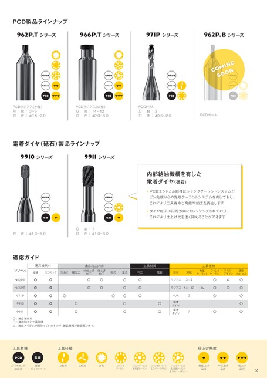

p.2製品ラインナップ

PCD製品ラインナップ
966P.Tシリーズ962P.Tシリーズ 966P.Tシリーズ 971Pシリーズ 962P.Bシリーズ 971Pシリーズ 962P.Bシリーズ
M
超硬合金 超硬合金 超硬合金超硬合金 超硬合金
セラミックセラミック セラミックセラミック セラミック セラミック
PCDPCD PCDPCD PCD
PCDラジアス(大径)PCDラジアス(小径) PCDドリルPCDラジアス(大径) PCDドリル
刃刃 数:14〜42 数:3〜9 刃刃 数:2数:14〜42 PCDボール 刃 数:2 PCDボール
刃刃 径:φ2.0〜6.0径:φ0.5〜2.0 刃刃 径:φ0.5〜2.0径:φ2.0〜6.0 刃 径:φ0.5〜2.0
電着ダイヤ(砥石)製品ラインナップ
9911シリーズ
内部給油機構を有した
電着ダイヤ(砥石)
PCDエンドミル同様にシャンククーラントシステムと
超硬合金 超硬合金 ピン先端からの先端クーラントシステムを有しており、 超硬合金 ピン先端からの先端クーラントシステムを有しており、
これにより工具寿命と高能率加工を両立します
セラミックセラミック ダイヤ粒子は円周方向にドレッシングされており、ダイヤ粒子は円周方向にドレッシングされており、 セラミック
電着電着 これにより仕上げ代を低く抑えることができますこれにより仕上げ代を低く抑えることができます 電着
刃 数:7
刃 刃 径:φ1.0〜6.0 径:φ1.0〜6.0 刃 径:φ1.0〜6.0
適応ガイド
適応加工内容適応被削材 工具材質適応加工内容 工具仕様工具材質 工具仕様
穴あけ 粗加工 シリーズ中仕上げ 超硬 仕上げ セラミック 乾式 湿式穴あけ粗加工 PCD 中仕上げ 電着 仕上げ 形状乾式 湿式 刃数 先端 PCD シャンク 電着 ワイパー 形状 測定 刃数 先端 シャンク ワイパー 測定
加工 加工 加工 加工 クーラント クーラント デザイン プロトコル クーラント クーラント デザイン プロトコル
962P.T○ ◎○ ◎ ○ ○ ○ ○ ラジアス 3-9 ○ ○ ○ △ ラジアス ○ 3-9 ○ △ ○
966P.T○ ◎○ ◎ ○ ○ ○ ○ ラジアス14-42 ○ △○ ○ ○ ラジアス ○ 14-42 △ ○ ○ ○
○ 971P ◎ ○◎ ○○ ○ ドリル ○ ○2 ○ ○ ドリル ○ ○ ○
○ 9910 ◎ ◎ ○ ○ ○ ダイヤ 電着 ○ ○ ダイヤ 電着 ○ ○
○ 9911 ◎ ◎ ○ ○ ○ ダイヤ 電着 ○7 ○ ○ ダイヤ 電着 ○ ○ ○
◎:適応被削材 ○:適応加工と工具仕様
△:適応アイテムが限られていますので、製品情報で確認願います。
工具仕様工具材種 工具仕様 仕上げ精度 仕上げ精度
PCD 電着
2枚刃 ダイヤモンド 焼結体 3枚刃 ダイヤモンド 電着 多刃 クーラント シャンク 2枚刃 シャンククーラント &先端クーラント 3枚刃 &ワイパーデザイン シャンククーラント 多刃 シャンククーラント &先端クーラント クーラント シャンク シャンククーラント &先端クーラント 粗仕上げ 品位 &ワイパーデザイン シャンククーラント 中仕上げ 品位 シャンククーラント &先端クーラント 仕上げ 品位 粗仕上げ 品位 中仕上げ 品位 仕上げ 品位
&ワイパーデザイン &ワイパーデザイン 2 2